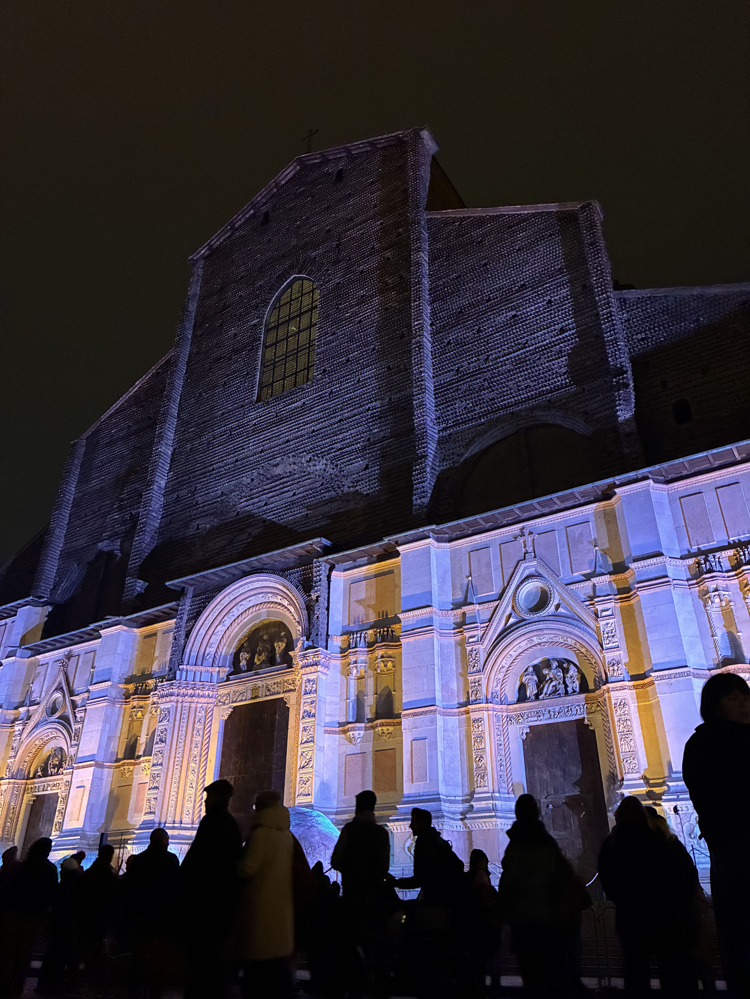
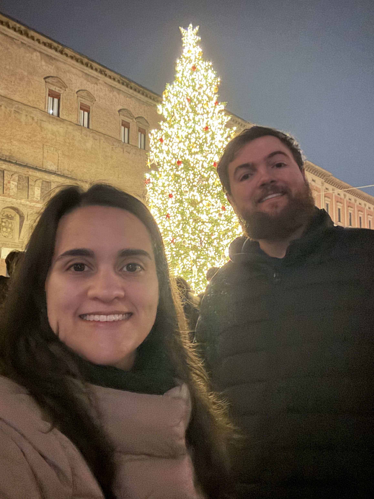
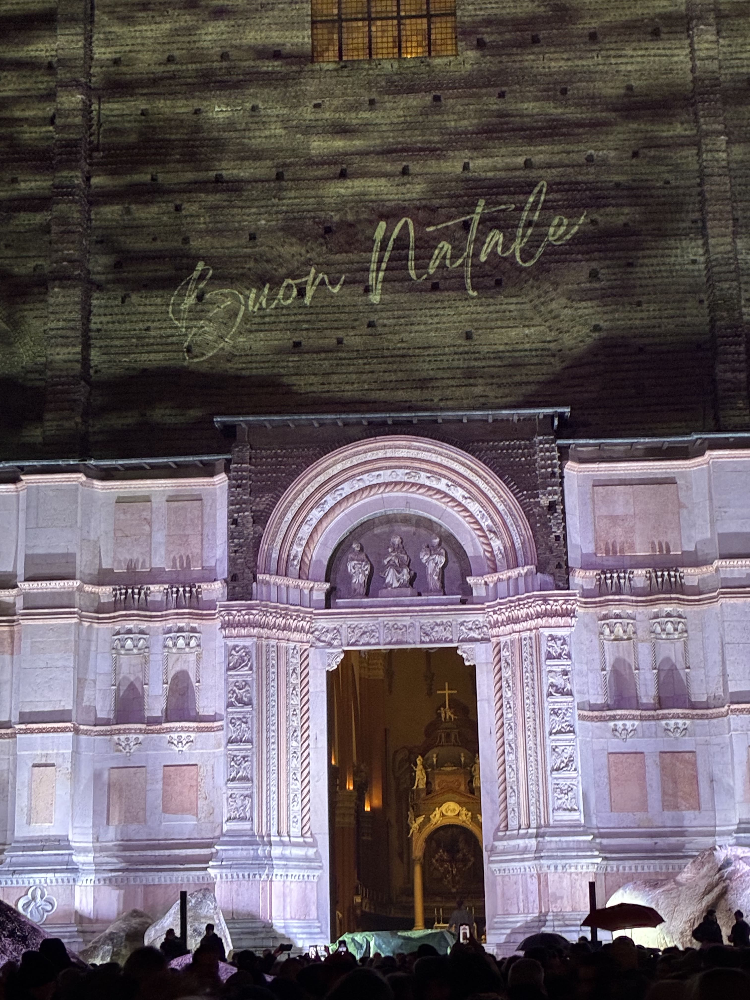
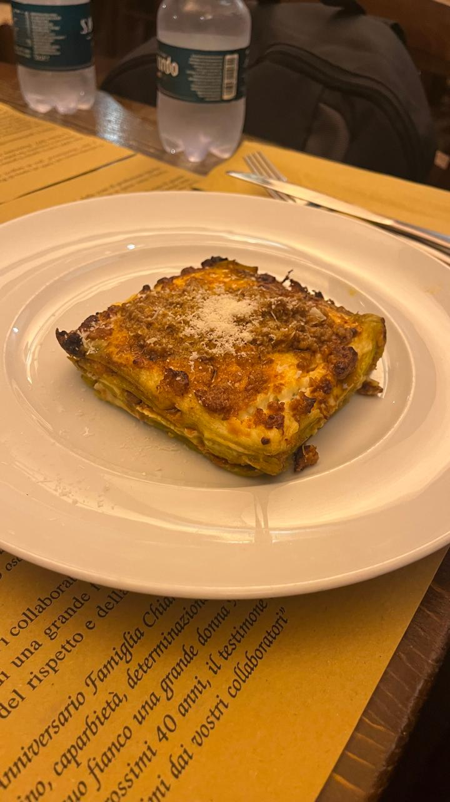
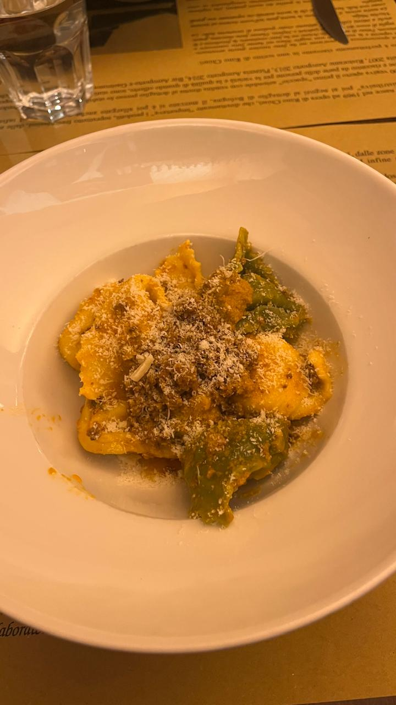
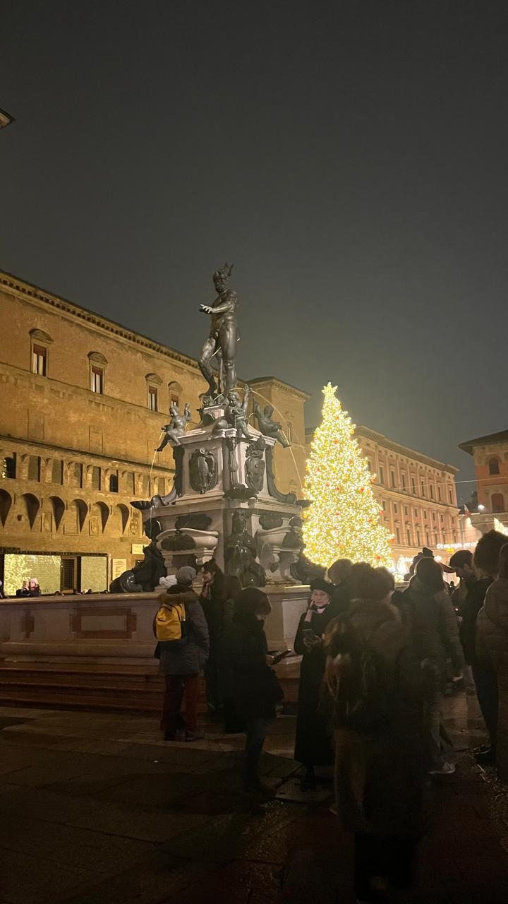
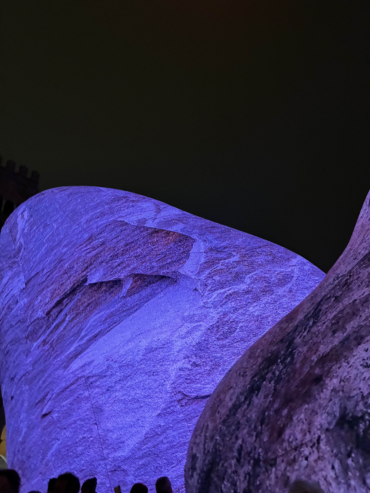
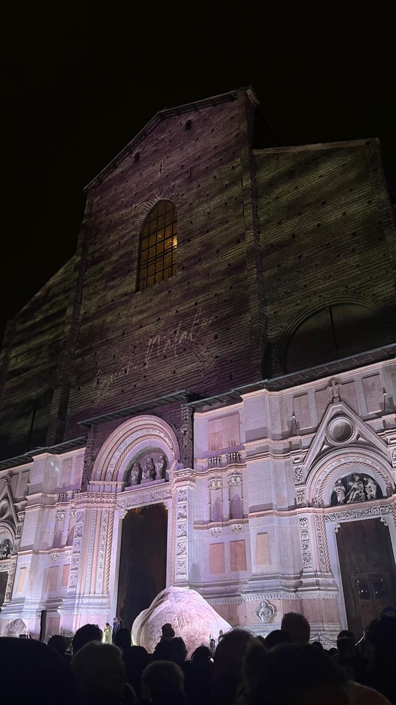

Bolonha
Bolonha é conhecida como a “cidade vermelha” por seus telhados e como a “cidade gorda” pela sua gastronomia. É também a “cidade erudita”, sede da universidade mais antiga do mundo ocidental. Um destino vibrante, cheio de história, cultura e sabores.








Milão → Bolonha
Saindo da Estação Central de Milão, pegue um trem de alta velocidade (Frecciarossa ou Italo) até Bolonha Centrale.
A viagem dura cerca de 1 hora e custa em torno de 25 a 40 euros
Pontos Turísticos Imperdíveis
- Piazza Maggiore: A praça central, rodeada por palácios históricos e pela Basílica de San Petronio.
- Torres de Bolonha: As torres Asinelli e Garisenda são símbolos da cidade e oferecem vistas incríveis.
- Universidade de Bolonha: Fundada em 1088, é a mais antiga do mundo ocidental.
- Quadrilátero: Bairro histórico cheio de mercados, lojas e restaurantes típicos.
Gastronomia em Bolonha
- Primo piatto: Tagliatelle al ragù (o verdadeiro “molho à bolonhesa”).
- Secondo piatto: Cotoletta alla bolognese, carne empanada com presunto e queijo.
- Sobremesa 🍮: Zuppa inglese, doce tradicional com creme e bolo embebido em licor.
Dica dos Ussinhos 🐻💡
Bolonha é perfeita para um bate-volta, mas também vale ficar mais tempo para explorar sua vida noturna e experimentar a culinária local com calma. Se você gosta de história e gastronomia, essa cidade vai te conquistar.